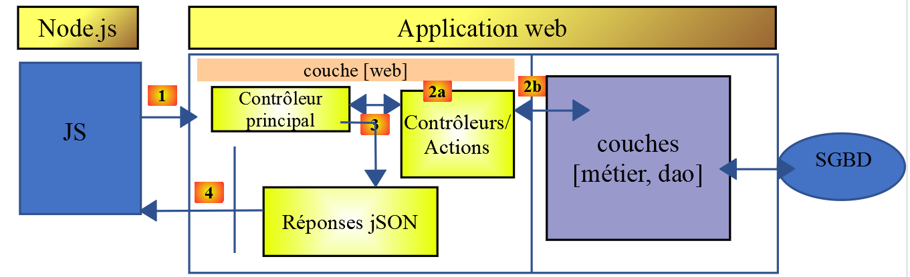
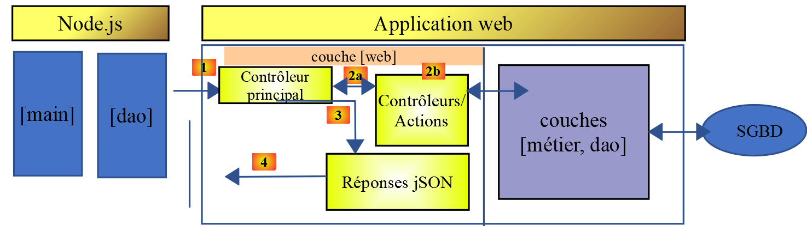
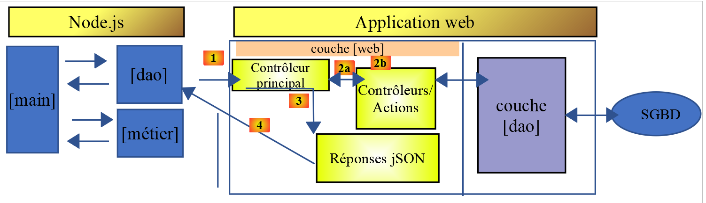
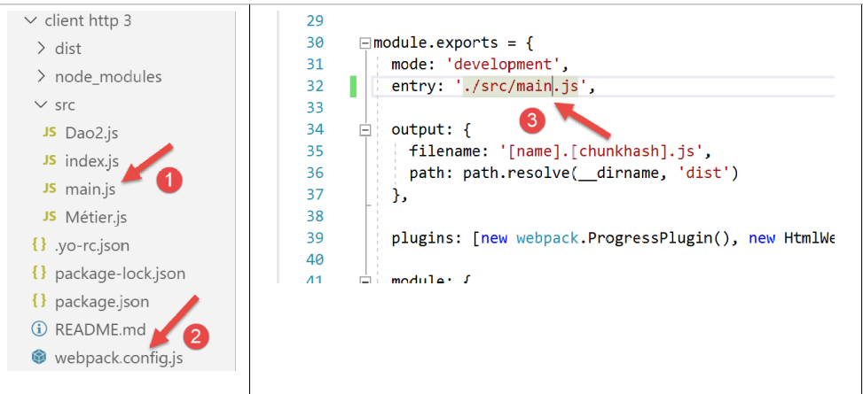
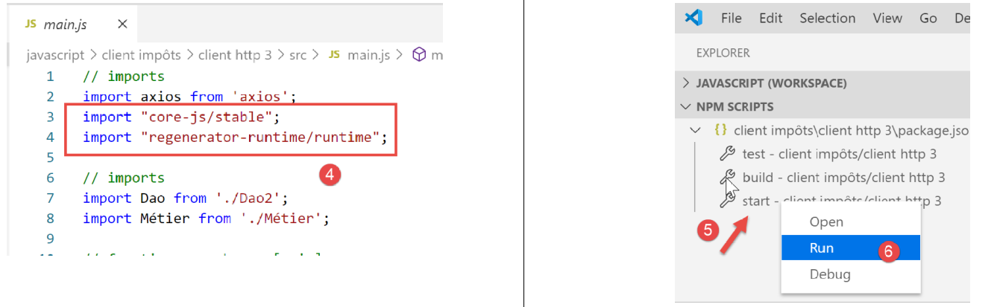
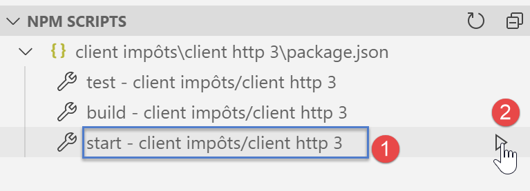

14. Javascript HTTP clients of the tax calculation service
14.1. Introduction
Here, we propose to write a [Node.js] client for version 14 of the tax calculation service. The client/server architecture will be as follows:

We will examine two versions of the client:
- Version 1 of the client will have the following [main, dao] layered structure:

- Version 2 of the client will have a [main, business logic, DAO] structure. The server’s [business logic] layer will be moved to the client:

14.2. HTTP Client 1

As mentioned, the HTTP 1 client implements the following client/server architecture:

We will implement:
- the [DAO] layer as a class;
- the [main] layer as a script using this class;
14.2.1. The [dao] layer
The [dao] layer will be implemented by the following class [Dao1.js]:
'use strict';
// imports
import qs from 'qs'
class Dao1 {
// constructor
constructor(axios) {
// axios library for making HTTP requests
this.axios = axios;
// session cookie
this.sessionCookieName = "PHPSESSID";
this.sessionCookie = '';
}
// initialize session
async initSession() {
// HTTP request options [get /main.php?action=init-session&type=json]
const options = {
method: "GET",
// URL parameters
params: {
action: 'init-session',
type: 'json'
}
};
// Execute the HTTP request
return await this.getRemoteData(options);
}
async authenticateUser(user, password) {
// HTTP request options [post /main.php?action=authenticate-user]
const options = {
method: "POST",
headers: {
'Content-type': 'application/x-www-form-urlencoded',
},
// POST body
data: qs.stringify({
user: user,
password: password
}),
// URL parameters
params: {
action: 'authenticate-user'
}
};
// execute the HTTP request
return await this.getRemoteData(options);
}
// calculate tax
async calculateTax(married, children, salary) {
// HTTP request options [post /main.php?action=calculate-tax]
const options = {
method: "POST",
headers: {
'Content-type': 'application/x-www-form-urlencoded',
},
// POST body [married, children, salary]
data: qs.stringify({
married: married,
children: children,
salary: salary
}),
// URL parameters
params: {
action: 'calculate-tax'
}
};
// execute the HTTP request
const data = await this.getRemoteData(options);
// result
return data;
}
// list of simulations
async listSimulations() {
// HTTP request options [get /main.php?action=list-simulations]
const options = {
method: "GET",
// URL parameters
params: {
action: 'list-simulations'
},
};
// execute the HTTP request
const data = await this.getRemoteData(options);
// result
return data;
}
// list of simulations
async deleteSimulation(index) {
// HTTP request options [get /main.php?action=delete-simulation&number=index]
const options = {
method: "GET",
// URL parameters
params: {
action: 'delete-simulation',
number: index
},
};
// execute the HTTP request
const data = await this.getRemoteData(options);
// result
return data;
}
async getRemoteData(options) {
// for the session cookie
if (!options.headers) {
options.headers = {};
}
options.headers.Cookie = this.sessionCookie;
// execute the HTTP request
let response;
try {
// asynchronous request
response = await this.axios.request('main.php', options);
} catch (error) {
// The [error] parameter is an exception instance—it can take various forms
if (error.response) {
// the server's response is in [error.response]
response = error.response;
} else {
// we throw the error again
throw error;
}
}
// response is the entire HTTP response from the server (HTTP headers + the response itself)
// retrieve the session cookie if it exists
const setCookie = response.headers['set-cookie'];
if (setCookie) {
// setCookie is an array
// we search for the session cookie in this array
let found = false;
let i = 0;
while (!found && i < setCookie.length) {
// search for the session cookie
const results = RegExp('^(' + this.sessionCookieName + '.+?);').exec(setCookie[i]);
if (results) {
// store the session cookie
// eslint-disable-next-line require-atomic-updates
this.sessionCookie = results[1];
// found
found = true;
} else {
// next element
i++;
}
}
}
// The server's response is in [response.data]
return response.data;
}
}
// export the class
export default Dao1;
- Here we are using what we learned in the linked section, where we introduced the [axios] library, which allows us to make HTTP requests in both [node.js] and a browser. We will look specifically at the script in the linked section;
- lines 9–15: the class constructor. This class will have three properties:
- [axios]: the [axios] object used to make HTTP requests. This is passed by the calling code;
- [sessionCookieName]: depending on the server, the session cookie has different names. Here, it is [PHPSESSID];
- [sessionCookie]: the session cookie sent by the server and stored by the client;
- lines 53–76: the asynchronous function [calculateTax] makes the request [post /main.php?action=calculate-tax] by posting the parameters [married, children, salary]. It returns the JSON string sent by the server as a JavaScript object;
- lines 79–92: the asynchronous function [listSimulations] makes the request [get /main.php?action=list-simulations]. It returns the JSON string sent by the server as a JavaScript object;
- lines 95–109: The asynchronous function [deleteSimulation] makes the request [get /main.php?action=delete-simulation&number=index]. It returns the JSON string sent by the server as a JavaScript object;
- line 121: the notation [this.axios] is used because here, the [axios] object passed to the constructor has been stored in the [this.axios] property;
- line 161: the [Dao1] class is exported so it can be used;
14.2.2. The [main1.js] script
The [main1.js] script makes a series of calls to the server using the [Dao1] class:
- initialization of a JSON session;
- authentication with [admin, admin];
- requests three tax calculations;
- requests the list of simulations;
- deletes one of them;
The code is as follows:
// import axios
import axios from 'axios';
// import the Dao1 class
import Dao from './Dao1';
// asynchronous function [main]
async function main() {
// Axios configuration
axios.defaults.timeout = 2000;
axios.defaults.baseURL = 'http://localhost/php7/scripts-web/impots/version-14';
// instantiate the [dao] layer
const dao = new Dao(axios);
// using the [dao] layer
try {
// initialize session
log("-----------init-session");
let response = await dao.initSession();
log(response);
// authentication
log("-----------authenticate-user");
response = await dao.authenticateUser("admin", "admin");
log(response);
// tax calculations
log("-----------calculate-tax x 3");
response = await Promise.all([
dao.calculateTax("yes", 2, 45000),
dao.calculateTax("no", 2, 45000),
dao.calculateTax("no", 1, 30000)
]);
log(response);
// list of simulations
log("-----------list-of-simulations");
response = await dao.listSimulations();
log(response);
// Delete a simulation
log("-----------deleting simulation #1");
response = await dao.deleteSimulation(1);
log(response);
} catch (error) {
// log the error
console.log("error=", error.message);
}
}
// log JSON
function log(object) {
console.log(JSON.stringify(object, null, 2));
}
// execution
main();
Comments
- line 2: import the [axios] library;
- line 4: import the [Dao] class;
- line 7: the [main] function that communicates with the server is asynchronous;
- lines 9-10: default configuration for HTTP requests to be sent to the server:
- line 9: [timeout] of 2 seconds;
- line 10: all URLs are prefixed with the base URL of version 14 of the tax calculation server;
- line 12: the [Dao] layer is built. It can now be used;
- lines 46–48: the [log] function is used to display the JSON string of a JavaScript object in a formatted manner: vertically with two spaces of indentation (3rd parameter);
- lines 15–18: initialization of the JSON session;
- lines 19–22: authentication;
- lines 23–30: three tax calculations are requested in parallel. Thanks to [await Promise.all], execution is blocked until all three results have been obtained;
- lines 31–34: list of simulations;
- lines 35–38: deletion of a simulation;
- lines 39–42: handling of any exceptions;
The execution results are as follows:
[Running] C:\myprograms\laragon-lite\bin\nodejs\node-v10\node.exe -r esm "c:\Data\st-2019\dev\es6\javascript\client impôts\client http 1\main1.js"
"-----------init-session"
{
"action": "init-session",
"status": 700,
"response": "session started with type [json]"
}
"-----------authenticate-user"
{
"action": "authenticate-user",
"status": 200,
"response": "Authentication successful [admin, admin]"
}
"-----------calculate-tax x 3"
[
{
"action": "calculate-tax",
"status": 300,
"response": {
"married": "yes",
"children": "2",
"salary": "45000",
"tax": 502,
"surcharge": 0,
"discount": 857,
"reduction": 126,
"rate": 0.14
}
},
{
"action": "calculate-tax",
"status": 300,
"response": {
"married": "no",
"children": "2",
"salary": "45000",
"tax": 3250,
"surcharge": 370,
"discount": 0,
"reduction": 0,
"rate": 0.3
}
},
{
"action": "calculate-tax",
"status": 300,
"response": {
"married": "no",
"children": "1",
"salary": "30000",
"tax": 1687,
"surcharge": 0,
"discount": 0,
"reduction": 0,
"rate": 0.14
}
}
]
"-----------list-of-simulations"
{
"action": "list-simulations",
"status": 500,
"response": [
{
"married": "yes",
"children": "2",
"salary": "45000",
"tax": 502,
"surcharge": 0,
"discount": 857,
"reduction": 126,
"rate": 0.14,
"arrayOfAttributes": null
},
{
"married": "no",
"children": "2",
"salary": "45000",
"tax": 3250,
"surcharge": 370,
"discount": 0,
"reduction": 0,
"rate": 0.3,
"arrayOfAttributes": null
},
{
"married": "no",
"children": "1",
"salary": "30000",
"tax": 1687,
"surcharge": 0,
"discount": 0,
"reduction": 0,
"rate": 0.14,
"arrayOfAttributes": null
}
]
}
"-----------simulation deletion #1"
{
"action": "delete-simulation",
"status": 600,
"response": [
{
"married": "yes",
"children": "2",
"salary": "45000",
"tax": 502,
"surcharge": 0,
"discount": 857,
"reduction": 126,
"rate": 0.14,
"arrayOfAttributes": null
},
{
"married": "no",
"children": "1",
"salary": "30000",
"tax": 1687,
"surcharge": 0,
"discount": 0,
"reduction": 0,
"rate": 0.14,
"arrayOfAttributes": null
}
]
}
[Done] exited with code=0 in 0.516 seconds
14.3. HTTP 2 Client

The architecture of the HTTP2 client is as follows:

We have moved the [business] layer from the server to the JavaScript client. Unlike what we did in the PHP7 course, the [main] layer will not need to go through the [business] layer to reach the [DAO] layer. We will use these two layers as specialized components:
- the [main] layer goes through the [DAO] layer whenever it needs data that is on the server;
- the [main] layer asks the [business] layer to perform the tax calculations;
- the [business] layer is independent of the [DAO] layer and never calls upon it;
14.3.1. The JavaScript [Business] class
The essence of the [Business] class in PHP was described in the linked article. It is a rather complex piece of code that we are recalling here, not to explain it, but to be able to translate it into JavaScript:
<?php
// namespace
namespace Application;
class Business implements BusinessInterface {
// DAO layer
private $dao;
// tax administration data
private $taxAdminData;
//---------------------------------------------
// [dao] layer setter
public function setDao(InterfaceDao $dao) {
$this->dao = $dao;
return $this;
}
public function __construct(DaoInterface $dao) {
// store a reference to the [dao] layer
$this->dao = $dao;
// retrieve the data needed to calculate the tax
// the [getTaxAdminData] method may throw an ExceptionImpots exception
// we let it propagate to the calling code
$this->taxAdminData = $this->dao->getTaxAdminData();
}
// calculate the tax
// --------------------------------------------------------------------------
public function calculateTax(string $married, int $children, int $salary): array {
// $marié: yes, no
// $children: number of children
// $salary: annual salary
// $this->taxAdminData: tax administration data
//
// Check that we have the tax administration data
if ($this->taxAdminData === NULL) {
$this->taxAdminData = $this->getTaxAdminData();
}
// Calculate tax with children
$result1 = $this->calculateTax2($married, $children, $salary);
$tax1 = $result1["tax"];
// Calculate tax without children
if ($children != 0) {
$result2 = $this->calculateTax2($married, 0, $salary);
$tax2 = $result2["tax"];
// apply the family quotient cap
$halfPartCap = $this->taxAdminData->getQfHalfPartCap();
if ($children < 3) {
// $PLAFOND_QF_DEMI_PART euros for the first 2 children
$tax2 = $tax2 - $children * $half-share-limit;
} else {
// $PLAFOND_QF_DEMI_PART euros for the first 2 children, double that for subsequent children
$tax2 = $tax2 - 2 * $half-share_limit - ($children - 2) * 2 * $half-share_limit;
}
} else {
$tax2 = $tax1;
$result2 = $result1;
}
// take the higher tax
if ($tax1 > $tax2) {
$tax = $tax1;
$rate = $result1["rate"];
$surcharge = $result1["surcharge"];
} else {
$surcharge = $tax2 - $tax1 + $result2["surcharge"];
$tax = $tax2;
$rate = $result2["rate"];
}
// calculate any tax credit
$discount = $this->getDiscount($spouse, $salary, $tax);
$tax -= $discount;
// calculate any tax reduction
$reduction = $this->getReduction($spouse, $salary, $children, $tax);
$tax -= $reduction;
// result
return ["tax" => floor($tax), "surcharge" => $surcharge, "discount" => $discount, "reduction" => $reduction, "rate" => $rate];
}
// --------------------------------------------------------------------------
private function calculateTax2(string $married, int $children, float $salary): array {
// $marié: yes, no
// $children: number of children
// $salary: annual salary
// $this->taxAdminData: tax administration data
//
// number of shares
$married = strtolower($married);
if ($married === "yes") {
$nbParts = $children / 2 + 2;
} else {
$numberOfShares = $children / 2 + 1;
}
// 1 share per child starting from the 3rd
if ($children >= 3) {
// half a portion more for each child starting with the third
$nbParts += 0.5 * ($children - 2);
}
// taxable income
$taxableIncome = $this->getTaxableIncome($salary);
// surcharge
$surcharge = floor($taxableIncome - 0.9 * $salary);
// for rounding issues
if ($surcharge < 0) {
$surplus = 0;
}
// family quotient
$quotient = $taxableIncome / $numberOfShares;
// tax calculation
$limits = $this->taxAdminData->getLimits();
$coeffR = $this->taxAdminData->getCoeffR();
$coeffN = $this->taxAdminData->getCoeffN();
// is placed at the end of the limits array to stop the following loop
$limits[count($limits) - 1] = $quotient;
// look up the tax rate
$i = 0;
while ($quotient > $limits[$i]) {
$i++;
}
// Since we placed $quotient at the end of the $limites array, the previous loop
// cannot go beyond the bounds of the $limits array
// now we can calculate the tax
$tax = floor($taxableIncome * $coeffR[$i] - $numberOfShares * $coeffN[$i]);
// result
return ["tax" => $tax, "surcharge" => $surcharge, "rate" => $coeffR[$i]];
}
// taxableIncome = annualSalary - deduction
// The deduction has a minimum and a maximum
private function getTaxableIncome(float $salary): float {
// 10% deduction from salary
$deduction = 0.1 * $salary;
// this deduction cannot exceed $this->taxAdminData->getMaxTenPercentDeduction()
if ($deduction > $this->taxAdminData->getMaxTenPercentDeduction()) {
$deduction = $this->taxAdminData->getMaxTenPercentDeduction();
}
// the deduction cannot be less than $this->taxAdminData->getMinTenPercentDeduction()
if ($deduction < $this->taxAdminData->getMinTenPercentDeduction()) {
$deduction = $this->taxAdminData->getMinTenPercentDeduction();
}
// taxable income
$taxableIncome = $salary - $deduction;
// result
return floor($taxableIncome);
}
// calculates a possible tax credit
private function getDiscount(string $married, float $salary, float $taxes): float {
// initially, a zero discount
$discount = 0;
// maximum tax amount to qualify for the deduction
$taxThresholdForDeduction = $married === "yes" ?
$this->taxAdminData->getPlafondImpotCouplePourDecote() :
$this->taxAdminData->getSingleTaxLimitForDiscount();
if ($taxes < $taxLimitForDiscount) {
// maximum deduction amount
$discountLimit = $married === "yes" ?
$this->taxAdminData->getCoupleDeductionLimit() :
$this->taxAdminData->getSingleTaxDeductionLimit();
// theoretical deduction
$discount = $discountLimit - 0.75 * $taxes;
// the deduction cannot exceed the tax amount
if ($discount > $taxes) {
$discount = $taxes;
}
// no discount <0
if ($discount < 0) {
$discount = 0;
}
}
// result
return ceil($discount);
}
// calculates a possible discount
private function getDiscount(string $married, float $salary, int $children, float $taxes): float {
// the income threshold to qualify for the 20% reduction
$IncomeThresholdForReduction = $married === "yes" ?
$this->taxAdminData->getIncomeLimitForCoupleDeduction() :
$this->taxAdminData->getIncomeLimitForSingleTaxpayersForReduction();
$IncomeLimitForReduction += $children * $this->taxAdminData->getHalfShareReductionValue();
if ($children > 2) {
$IncomeLimitForReduction += ($children - 2) * $this->taxAdminData->getHalfShareReductionValue();
}
// taxable income
$taxableIncome = $this->getTaxableIncome($salary);
// deduction
$reduction = 0;
if ($taxableIncome < $IncomeThresholdForDeduction) {
// 20% reduction
$reduction = 0.2 * $taxes;
}
// result
return ceil($reduction);
}
// Calculate taxes in batch mode
public function executeBatchTaxes(string $taxPayersFileName, string $resultsFileName, string $errorsFileName): void {
// let exceptions from the [DAO] layer propagate
// retrieve taxpayer data
$taxPayersData = $this->dao->getTaxPayersData($taxPayersFileName, $errorsFileName);
// results array
$results = [];
// process them
foreach ($taxPayersData as $taxPayerData) {
// calculate the tax
$result = $this->calculateTax(
$taxPayerData->isMarried(),
$taxPayerData->getChildren(),
$taxPayerData->getSalary());
// update [$taxPayerData]
$taxPayerData->setAmount($result["tax"]);
$taxPayerData->setDiscount($result["discount"]);
$taxPayerData->setSurcharge($result["surcharge"]);
$taxPayerData->setRate($result["rate"]);
$taxPayerData->setReduction($result["reduction"]);
// add the result to the results array
$results[] = $taxPayerData;
}
// Save results
$this->dao->saveResults($resultsFileName, $results);
}
}
- lines 19–26: the PHP class constructor. Since we said we were building a [business] layer independent of the [DAO] layer, we will make two changes to this constructor in JavaScript:
- it will not receive an instance of the [DAO] layer (it no longer needs one);
- it will not request tax data from the [taxAdminData] administration from the [dao] layer: the calling code will pass this data to the constructor;
- Lines 197–122: We will not implement the [executeBatchImpots] method, whose ultimate purpose was to save simulation results to a text file. We want code that works both in [node.js] and in a browser. However, saving data to the file system of the machine running the client browser is not possible;
Given these restrictions, the code for the JavaScript [Métier] class is as follows:
'use strict';
// Business class
class Business {
// constructor
constructor(taxAdmindata) {
// this.taxAdminData: tax administration data
this.taxAdminData = taxAdmindata;
}
// tax calculation
// --------------------------------------------------------------------------
calculateTax(married, children, salary) {
// married: yes, no
// children: number of children
// salary: annual salary
// this.taxAdminData: data from the tax authority
//
// tax calculation with children
const result1 = this.calculateTax2(married, children, salary);
const tax1 = result1["tax"];
// Calculate tax without children
let result2, tax2, half-share-threshold;
if (children !== 0) {
result2 = this.calculateTax2(married, 0, salary);
tax2 = result2["tax"];
// apply the family quotient cap
half-share-ceiling = this.taxAdminData.half-share-ceiling;
if (children < 3) {
// FAMILY QUOTIENT HALF-PART CAP in euros for the first 2 children
tax2 = tax2 - children * half-share-limit;
} else {
// PLAFOND_QF_DEMI_PART euros for the first 2 children, double that for subsequent children
tax2 = tax2 - 2 * half-share_limit - (children - 2) * 2 * half-share_limit;
}
} else {
// no tax recalculation
tax2 = tax1;
result2 = result1;
}
// take the higher tax from [tax1, tax2]
let tax, rate, surcharge;
if (tax1 > tax2) {
tax = tax1;
rate = result1["rate"];
surcharge = result1["surcharge"];
} else {
surcharge = tax2 - tax1 + result2["surcharge"];
tax = tax2;
rate = result2["rate"];
}
// calculate a possible discount
const discount = this.getDiscount(married, tax);
tax -= discount;
// calculate any tax reduction
const taxCredit = this.getTaxCredit(spouse, income, children, tax);
tax -= reduction;
// result
return {
"tax": Math.floor(tax), "surcharge": surcharge, "discount": discount, "reduction": reduction,
"rate": rate
};
}
// --------------------------------------------------------------------------
calculateTax2(married, children, salary) {
// married: yes, no
// children: number of children
// salary: annual salary
// this->taxAdminData: tax administration data
//
// number of shares
married = married.toLowerCase();
let nbParts;
if (married === "yes") {
nbParts = children / 2 + 2;
} else {
nbParts = children / 2 + 1;
}
// 1 share per child starting from the 3rd
if (children >= 3) {
// half a portion more for each child starting from the third
nbParts += 0.5 * (children - 2);
}
// taxable income
const taxableIncome = this.getTaxableIncome(salary);
// surcharge
let surcharge = Math.floor(taxableIncome - 0.9 * salary);
// for rounding issues
if (overlay < 0) {
surplus = 0;
}
// family quotient
const quotient = taxableIncome / numberOfShares;
// tax calculation
const limits = this.taxAdminData.limits;
const coeffR = this.taxAdminData.coeffR;
const coeffN = this.taxAdminData.coeffN;
// is placed at the end of the limits array to stop the following loop
limits[limits.length - 1] = quotient;
// search for the tax rate
let i = 0;
while (quotient > limits[i]) {
i++;
}
// Since quotient is stored at the end of the limits array, the previous loop
// cannot go beyond the limits array
// now we can calculate the tax
const tax = Math.floor(taxableIncome * coeffR[i] - numShares * coeffN[i]);
// result
return { "tax": tax, "surcharge": surcharge, "rate": coeffR[i] };
}
// taxableIncome = annualSalary - deduction
// the deduction has a minimum and a maximum
getTaxableIncome(salary) {
// deduction of 10% of the salary
let deduction = 0.1 * salary;
// this deduction cannot exceed taxAdminData.getMaxTenPercentDeduction()
if (allowance > this.taxAdminData.MaxTenPercentAllowance) {
deduction = this.taxAdminData.maxTenPercentDeduction;
}
// the deduction cannot be less than taxAdminData.getMinTenPercentDeduction()
if (deduction < this.taxAdminData.minTenPercentDeduction) {
deduction = this.taxAdminData.minTenPercentDeduction;
}
// taxable income
const taxableIncome = salary - deduction;
// result
return Math.floor(taxableIncome);
}
// calculates a possible tax deduction
getTaxDeduction(married, taxes) {
// Initially, a discount of zero
let discount = 0;
// maximum tax amount to qualify for the deduction
let taxCeilingForDiscount = married === "yes" ?
this.taxAdminData.taxCeilingForMarriedCoupleForDiscount :
this.taxAdminData.taxCeilingForSingleForDiscount;
let discountCeiling;
if (taxes < taxLimitForDeduction) {
// maximum discount amount
discountLimit = married === "yes" ?
this.taxAdminData.coupleDiscountLimit :
this.taxAdminData.singleDiscountLimit;
// theoretical deduction
discount = discountLimit - 0.75 * taxes;
// the deduction cannot exceed the tax amount
if (discount > taxes) {
discount = taxes;
}
// no discount < 0
if (discount < 0) {
discount = 0;
}
}
// result
return Math.ceil(discount);
}
// calculates a possible tax deduction
getReduction(married, salary, children, taxes) {
// the income threshold to qualify for the 20% reduction
let incomeThresholdForReduction = married === "yes" ?
this.taxAdminData.coupleIncomeLimitForReduction :
this.taxAdminData.IncomeLimitForSingleTaxpayers;
incomeThresholdForDeduction += children * this.taxAdminData.halfShareDeductionValue;
if (children > 2) {
IncomeLimitForReduction += (children - 2) * this.taxAdminData.halfShareReductionValue;
}
// taxable income
const taxableIncome = this.getTaxableIncome(salary);
// deduction
let reduction = 0;
if (taxableIncome < incomeThresholdForDeduction) {
// 20% reduction
reduction = 0.2 * taxes;
}
// result
return Math.ceil(reduction);
}
}
// export the class
export default Business;
- The JavaScript code closely follows the PHP code;
- The [Business] class is exported, line 187;
14.3.2. The JavaScript class [Dao2]

The [Dao2] class implements the [dao] layer of the above JavaScript client as follows:
'use strict';
// imports
import qs from 'qs'
class Dao2 {
// constructor
constructor(axios) {
this.axios = axios;
// session cookie
this.sessionCookieName = "PHPSESSID";
this.sessionCookie = '';
}
// initialize session
async initSession() {
// HTTP request options [get /main.php?action=init-session&type=json]
const options = {
method: "GET",
// URL parameters
params: {
action: 'init-session',
type: 'json'
}
};
// Execute the HTTP request
return await this.getRemoteData(options);
}
async authenticateUser(user, password) {
// HTTP request options [post /main.php?action=authenticate-user]
const options = {
method: "POST",
headers: {
'Content-type': 'application/x-www-form-urlencoded',
},
// POST body
data: qs.stringify({
user: user,
password: password
}),
// URL parameters
params: {
action: 'authenticate-user'
}
};
// Execute the HTTP request
return await this.getRemoteData(options);
}
async getAdminData() {
// HTTP request options [get /main.php?action=get-admindata]
const options = {
method: "GET",
// URL parameters
params: {
action: 'get-admindata'
}
};
// execute the HTTP request
const data = await this.getRemoteData(options);
// result
return data;
}
async getRemoteData(options) {
// for the session cookie
if (!options.headers) {
options.headers = {};
}
options.headers.Cookie = this.sessionCookie;
// execute the HTTP request
let response;
try {
// asynchronous request
response = await this.axios.request('main.php', options);
} catch (error) {
// The [error] parameter is an exception instance—it can take various forms
if (error.response) {
// the server's response is in [error.response]
response = error.response;
} else {
// we re-throw the error
throw error;
}
}
// response is the entire HTTP response from the server (HTTP headers + the response itself)
// retrieve the session cookie if it exists
const setCookie = response.headers['set-cookie'];
if (setCookie) {
// setCookie is an array
// we search for the session cookie in this array
let found = false;
let i = 0;
while (!found && i < setCookie.length) {
// search for the session cookie
const results = RegExp('^(' + this.sessionCookieName + '.+?);').exec(setCookie[i]);
if (results) {
// store the session cookie
// eslint-disable-next-line require-atomic-updates
this.sessionCookie = results[1];
// found
found = true;
} else {
// next element
i++;
}
}
}
// The server's response is in [response.data]
return response.data;
}
}
// export the class
export default Dao2;
Comments
- The [Dao2] class implements only three of the possible requests to the tax calculation server:
- [init-session] (lines 17–29): to initialize the JSON session;
- [authenticate-user] (lines 31–50): to authenticate;
- [get-admindata] (lines 52–65): to retrieve tax administration data that will enable tax calculations on the client side;
- lines 52–65: we introduce a new action [get-admindata] to the server. This action had not been implemented until now. We are doing so now.
14.3.3. Modification of the tax calculation server
The tax calculation server must implement a new action. We will do this on version 14 of the server. The action to be implemented has the following characteristics:
- it is requested by an operation [get /main.php?action=get-admindata];
- it returns the JSON string of an object encapsulating the tax administration data;
We will review how to add an action to our server.
The modification will be made in NetBeans:

In [2], we modify the [config.json] file to add the new action:
{
"databaseFilename": "Config/database.json",
"corsAllowed": true,
"rootDirectory": "C:/myprograms/laragon-lite/www/php7/scripts-web/impots/version-14",
"relativeDependencies": [
"/Entities/BaseEntity.php",
"/Entities/Simulation.php",
"/Entities/Database.php",
"/Entities/TaxAdminData.php",
"/Entities/TaxExceptions.php",
"/Utilities/Logger.php",
"/Utilities/SendAdminMail.php",
"/Model/InterfaceServerDao.php",
"/Model/ServerDao.php",
"/Model/ServerDaoWithSession.php",
"/Model/InterfaceServerMetier.php",
"/Model/ServerBusiness.php",
"/Responses/InterfaceResponse.php",
"/Responses/ParentResponse.php",
"/Responses/JsonResponse.php",
"/Responses/XmlResponse.php",
"/Responses/HtmlResponse.php",
"/Controllers/InterfaceController.php",
"/Controllers/InitSessionController.php",
"/Controllers/ListSimulationsController.php",
"/Controllers/AuthentifierUtilisateurController.php",
"/Controllers/CalculateTaxController.php",
"/Controllers/DeleteSimulationController.php",
"/Controllers/EndSessionController.php",
"/Controllers/DisplayTaxCalculationController.php",
"/Controllers/AdminDataController.php"
],
"absoluteDependencies": [
"C:/myprograms/laragon-lite/www/vendor/autoload.php",
"C:/myprograms/laragon-lite/www/vendor/predis/predis/autoload.php"
],
"users": [
{
"login": "admin",
"passwd": "admin"
}
],
"adminMail": {
"smtp-server": "localhost",
"smtp-port": "25",
"from": "guest@localhost",
"to": "guest@localhost",
"subject": "Tax calculation server crash",
"tls": "FALSE",
"attachments": []
},
"logsFilename": "Logs/logs.txt",
"actions":
{
"init-session": "\\InitSessionController",
"authenticate-user": "\\AuthentifierUtilisateurController",
"calculate-tax": "\\CalculateTaxController",
"list-simulations": "\\ListSimulationsController",
"delete-simulation": "\\DeleteSimulationController",
"end-session": "\\EndSessionController",
"display-tax-calculation": "\\DisplayTaxCalculationController",
"get-admindata": "\\AdminDataController"
},
"types": {
"json": "\\JsonResponse",
"html": "\\HtmlResponse",
"xml": "\\XmlResponse"
},
"views": {
"authentication-view.php": [700, 221, 400],
"tax-calculation-view.php": [200, 300, 341, 350, 800],
"view-simulation-list.php": [500, 600]
},
"error-views": "error-views.php"
}
The modification consists of:
- line 67: add the [get-admindata] action and associate it with a controller;
- line 36: declare this controller in the list of classes to be loaded by the PHP application;
The next step is to implement the [AdminDataController] controller [3]:
<?php
namespace Application;
// Symfony dependencies
use \Symfony\Component\HttpFoundation\Response;
use \Symfony\Component\HttpFoundation\Request;
use \Symfony\Component\HttpFoundation\Session\Session;
// alias for the [dao] layer
use \Application\ServerDaoWithSession as ServerDaoWithRedis;
class AdminDataController implements InterfaceController {
// $config is the application configuration
// Processing a Request
// accesses the Session and can modify it
// $infos is additional information specific to each controller
// returns an array [$statusCode, $status, $content, $headers]
public function execute(
array $config,
Request $request,
Session $session,
array $infos = NULL): array {
// There must be a single GET parameter
$method = strtolower($request->getMethod());
$error = $method !== "get" || $request->query->count() != 1;
if ($error) {
// log the error
$message = "You must use the [get] method with the single [action] parameter in the URL";
$status = 1001;
// return result to the main controller
return [Response::HTTP_BAD_REQUEST, $status, ["response" => $message], []];
}
// we can work
// Redis
\Predis\Autoloader::register();
try {
// [predis] client
$redis = new \Predis\Client();
// Connect to the server to check if it's available
$redis->connect();
} catch (\Predis\Connection\ConnectionException $ex) {
// Something went wrong
// return result with error to the main controller
$status = 1050;
return [Response::HTTP_INTERNAL_SERVER_ERROR, $status,
["response" => "[redis], " . utf8_encode($ex->getMessage())], []];
}
// Retrieve data from the tax authority
// first check the [redis] cache
if (!$redis->get("taxAdminData")) {
try {
// retrieve tax data from the database
$dao = new ServerDaoWithRedis($config["databaseFilename"], NULL);
// taxAdminData
$taxAdminData = $dao->getTaxAdminData();
// store the retrieved data in Redis
$redis->set("taxAdminData", $taxAdminData);
} catch (\RuntimeException $ex) {
// Something went wrong
// return result with error to the main controller
$status = 1041;
return [Response::HTTP_INTERNAL_SERVER_ERROR, $status,
["response" => utf8_encode($ex->getMessage())], []];
}
} else {
// tax data is retrieved from the [redis] store with [application] scope
$arrayOfAttributes = \json_decode($redis->get("taxAdminData"), true);
// instantiate a [TaxAdminData] object from the previous array of attributes
$taxAdminData = (new TaxAdminData())->setFromArrayOfAttributes($arrayOfAttributes);
}
// Return the result to the main controller
$status = 1000;
return [Response::HTTP_OK, $status, ["response" => $taxAdminData], []];
}
}
Comments
- line 12: like the server’s other controllers, [AdminDataController] implements the [InterfaceController] interface consisting of the [execute] method on lines 19–79;
- line 78: as with the server’s other controllers, the [AdminDataController.execute] method returns an array [$status, $status, [‘response’=>$response]] with:
- [$status]: the HTTP response status code;
- [$état]: an internal application code representing the server’s state after executing the client’s request;
- [$response]: an array encapsulating the response to be sent to the client. Here, this array will later be converted into a JSON string;
- lines 25–34: we verify that the client’s [get-admindata] action is syntactically correct;
- lines 37–74: retrieve a [TaxAdminData] object found either:
- lines 56–59: from the database if it was not found in the [redis] cache;
- lines 70–73: in the [redis] cache;
This code is taken from the [CalculerImpotController] controller explained in the linked article. In fact, this controller also needed to retrieve the [TaxAdminData] object encapsulating the tax administration data.
During testing of the JavaScript client, the JSON format of [TaxAdminData] caused issues when this object was found in the [redis] cache. To understand why, let’s examine how this object is stored in [redis]:


- In [5-7], we see that numeric values were stored as strings. PHP handled this because the + operator in calculations involving numbers and strings implicitly causes a type conversion from string to number. But JavaScript does the opposite: the + operator in calculations involving numbers and strings implicitly causes a type conversion from a number to a string. The calculations in the JavaScript [Métier] class are therefore incorrect;
To fix this issue, we modify the [TaxAdminData.setFromArrayOfAttributes] method used on line 71 of the controller to instantiate a [TaxAdminData] object (see article) from the JSON string found in the [redis] cache:
<?php
namespace Application;
class TaxAdminData extends BaseEntity {
// tax brackets
protected $limits;
protected $coeffR;
protected $coeffN;
// tax calculation constants
protected $halfShareIncomeLimit;
protected $singleIncomeLimitForReduction;
protected $coupleIncomeLimitForReduction;
protected $half-share-reduction-value;
protected $singleDiscountCeiling;
protected $coupleDiscountLimit;
protected $coupleTaxCeilingForDiscount;
protected $singleTaxCeilingForDeduction;
protected $MaxTenPercentDeduction;
protected $minimumTenPercentDeduction;
// initialization
public function setFromJsonFile(string $taxAdminDataFilename) {
// parent
parent::setFromJsonFile($taxAdminDataFilename);
// check attribute values
$this->checkAttributes();
// return the object
return $this;
}
protected function check($value): \stdClass {
// $value is an array of string elements or a single element
if (!\is_array($value)) {
$array = [$value];
} else {
$array = $value;
}
// Convert the array of strings to an array of real numbers
$newArray = [];
$result = new \stdClass();
// the elements of the array must be positive or zero decimal numbers
$pattern = '/^\s*([+]?)\s*(\d+\.\d*|\.\d+|\d+)\s*$/';
for ($i = 0; $i < count($array); $i++) {
if (preg_match($pattern, $array[$i])) {
// add the float to newArray
$newArray[] = (float) $array[$i];
} else {
// log the error
$result->error = TRUE;
// exit
return $result;
}
}
// return the result
$result->error = FALSE;
if (!\is_array($value)) {
// a single value
$result->value = $newArray[0];
} else {
// a list of values
$result->value = $newArray;
}
return $result;
}
// initialization using an array of attributes
public function setFromArrayOfAttributes(array $arrayOfAttributes) {
// parent
parent::setFromArrayOfAttributes($arrayOfAttributes);
// check the attribute values
$this->checkAttributes();
// return the object
return $this;
}
// Check attribute values
protected function checkAttributes() {
// check that attribute values are real numbers >= 0
foreach ($this as $key => $value) {
if (is_string($value)) {
// $value must be a real number >= 0 or an array of real numbers >= 0
$result = $this->check($value);
// error?
if ($result->error) {
// throw an exception
throw new ExceptionImpots("The value of the [$key] attribute is invalid");
} else {
// store the value
$this->$key = $result->value;
}
}
}
// return the object
return $this;
}
// getters and setters
...
}
Comments
- line 5: the [TaxAdminData] class extends the [BaseEntity] class, which already has the [setFromArrayOfAttributes] method. Since this method is not suitable, we redefine it on lines 67–75;
- line 70: the [setFromArrayOfAttributes] method of the parent class is first used to initialize the class’s attributes;
- line 72: the [checkAttributes] method verifies that the associated values are indeed numbers. If they are strings, they are converted to numbers;
- line 74: the resulting [$this] object is then an object with attributes having numeric values;
- lines 78–93: the [checkAttributes] method verifies that the values associated with the object’s attributes are indeed numeric;
- line 80: the list of attributes is traversed;
- line 81: if the value of an attribute is of type [string];
- line 83: then we check that this string represents a number;
- line 90: if so, the string is converted to a number and assigned to the attribute being tested;
- lines 85–86: if not, an exception is thrown;
- lines 32–65: the [check] function does a bit more than necessary. It handles both arrays and single values. However, here it is called only to check a value of type [string]. It returns an object with the properties [error, value] where:
- [error] is a boolean indicating whether an error occurred or not;
- [value] is the [value] parameter from line 32, converted to a number or an array of numbers as appropriate;
The [BaseEntity] class, which previously had an attribute named [arrayOfAttributes], has been modified to remove this attribute: it was causing issues with the [TaxAdminData] JSON string. The class has been rewritten as follows:
<?php
namespace Application;
class BaseEntity {
// initialization from a JSON file
public function setFromJsonFile(string $jsonFilename) {
// retrieve the contents of the tax data file
$fileContents = \file_get_contents($jsonFilename);
$error = FALSE;
// error?
if (!$fileContents) {
// log the error
$error = TRUE;
$message = "The data file [$jsonFilename] does not exist";
}
if (!$error) {
// retrieve the JSON code from the configuration file into an associative array
$arrayOfAttributes = \json_decode($fileContents, true);
// error?
if ($arrayOfAttributes === FALSE) {
// log the error
$error = TRUE;
$message = "The JSON data file [$jsonFilename] could not be processed correctly";
}
}
// error?
if ($error) {
// throw an exception
throw new TaxException($message);
}
// Initialize the class attributes
foreach ($arrayOfAttributes as $key => $value) {
$this->$key = $value;
}
// check for the presence of all attributes
$this->checkForAllAttributes($arrayOfAttributes);
// return the object
return $this;
}
public function checkForAllAttributes($arrayOfAttributes) {
// Check that all keys have been initialized
foreach (\array_keys($arrayOfAttributes) as $key) {
if (!isset($this->$key)) {
throw new ExceptionImpots("The [$key] attribute of the class "
. get_class($this) . " has not been initialized");
}
}
}
public function setFromArrayOfAttributes(array $arrayOfAttributes) {
// initialize some of the class's attributes (not necessarily all)
foreach ($arrayOfAttributes as $key => $value) {
$this->$key = $value;
}
// return the object
return $this;
}
// toString
public function __toString() {
// object attributes
$arrayOfAttributes = \get_object_vars($this);
// JSON string of the object
return \json_encode($arrayOfAttributes, JSON_UNESCAPED_UNICODE);
}
}
Comments
- line 20: the attribute [$this→arrayOfAttributes] has been converted into a variable that must now be passed to the [checkForAllAttributes] method on line 38, which previously operated on the attribute [$this→arrayOfAttributes];
Due to this change in [BaseEntity], the [Database] class must also be slightly modified:
<?php
namespace Application;
class Database extends BaseEntity {
// attributes
protected $dsn;
protected $id;
protected $pwd;
protected $tableTranches;
protected $colLimits;
protected $colCoeffR;
protected $colCoeffN;
protected $constantTable;
protected $colQfDemiPartLimit;
protected $colIncomeLimitSingleForDeduction;
protected $colIncomeLimitCoupleForReduction;
protected $colHalfShareReductionValue;
protected $colSingleDiscountLimit;
protected $colCoupleDiscountLimit;
protected $colIncomeCeilingSingleForDeduction;
protected $colCoupleTaxCeilingForDeduction;
protected $colMaxTenPercentDeduction;
protected $colMinTenPercentDeduction;
// setter
// initialization
public function setFromJsonFile(string $jsonFilename) {
// parent
parent::setFromJsonFile($jsonFilename);
// return the object
return $this;
}
// getters and setters
...
}
Comments
- In the original code, after line 30, the method [parent::checkForAllAttributes] was called. This is no longer necessary since it is now automatically handled by the method [parent::setFromJsonFile($jsonFilename)];
14.3.4. [Postman] server tests
[Postman] was introduced in the linked article.
We use the following Postman tests:


The JSON result of this last request is as follows:

- In [5-8], you can see that the attributes in the JSON string do indeed have numeric values (not strings). This result will allow the JavaScript [Business] class to execute normally;
14.3.5. The main script [main]

The main script [main] of the JavaScript client is as follows:
// imports
import axios from 'axios';
// imports
import Dao from './Dao2';
import Business from './Business';
// asynchronous function [main]
async function main() {
// Axios configuration
axios.defaults.timeout = 2000;
axios.defaults.baseURL = 'http://localhost/php7/scripts-web/impots/version-14';
// Instantiate the [dao] layer
const dao = new Dao(axios);
// HTTP requests
let taxAdminData;
try {
// initialize session
log("-----------init-session");
let response = await dao.initSession();
log(response);
// authentication
log("-----------authenticate-user");
response = await dao.authenticateUser("admin", "admin");
log(response);
// tax data
log("-----------get-admindata");
response = await dao.getAdminData();
log(response);
taxAdminData = response.response;
} catch (error) {
// log the error
console.log("error=", error.message);
// end
return;
}
// instantiate the [business] layer
const business = new Business(taxAdminData);
// tax calculations
log("-----------calculate-tax x 3");
const simulations = [];
simulations.push(business.calculateTax("yes", 2, 45000));
simulations.push(job.calculateTax("no", 2, 45000));
simulations.push(job.calculateTax("no", 1, 30000));
// list of simulations
log("-----------list-of-simulations");
log(simulations);
// Delete a simulation
log("-----------deleting simulation #1");
simulations.splice(1, 1);
log(simulations);
}
// JSON log
function log(object) {
console.log(JSON.stringify(object, null, 2));
}
// execute
main();
Comments
- lines 5-6: imports of the [Dao] and [Business] classes;
- line 9: the asynchronous function [main] that will handle communication with the server using the [Dao] class and ask the [Business] class to perform tax calculations;
- lines 10-36: the script calls the [initSession, authenticateUser, getAdminData] methods of the [Dao] layer sequentially and in a blocking manner;
- line 38: we no longer need the [dao] layer. We have all the elements needed to run the [business] layer of the JavaScript client;
- lines 41–46: we perform three tax calculations and store the results in an array [simulations];
- line 49: we display the simulations array;
- line 52: we remove one of them;
The results of running the main script are as follows:
[Running] C:\myprograms\laragon-lite\bin\nodejs\node-v10\node.exe -r esm "c:\Data\st-2019\dev\es6\javascript\client impôts\client http 2\main2.js"
"-----------init-session"
{
"action": "init-session",
"status": 700,
"response": "session started with type [json]"
}
"-----------authenticate-user"
{
"action": "authenticate-user",
"status": 200,
"response": "Authentication successful [admin, admin]"
}
"-----------get-admindata"
{
"action": "get-admindata",
"status": 1000,
"response": {
"limits": [
9964,
27519,
73779,
156244,
0
],
"coeffR": [
0,
0.14,
0.3,
0.41,
0.45
],
"coeffN": [
0,
1394.96,
5798,
13913.69,
20163.45
],
"half-share-income-limit": 1551,
"IncomeLimitSingleForReduction": 21037,
"coupleIncomeLimitForReduction": 42074,
"half-share-reduction-value": 3797,
"singleDiscountLimit": 1196,
"coupleDiscountLimit": 1970,
"coupleTaxCeilingForDiscount": 2627,
"singleTaxCeilingForDiscount": 1595,
"MaxTenPercentDeduction": 12502,
"minimumTenPercentDeduction": 437
}
}
"-----------calculate-tax x 3"
"-----------list-of-simulations"
[
{
"tax": 502,
"surcharge": 0,
"discount": 857,
"discount": 126,
"rate": 0.14
},
{
"tax": 3250,
"surcharge": 370,
"discount": 0,
"discount": 0,
"rate": 0.3
},
{
"tax": 1687,
"surcharge": 0,
"discount": 0,
"reduction": 0,
"rate": 0.14
}
]
"-----------simulation removal #1"
[
{
"tax": 502,
"surcharge": 0,
"discount": 857,
"discount": 126,
"rate": 0.14
},
{
"tax": 1687,
"surcharge": 0,
"discount": 0,
"discount": 0,
"rate": 0.14
}
]
[Done] exited with code=0 in 0.583 seconds
14.4. HTTP 3 Client

In this section, we port the [HTTP Client 2] application to a browser using the following architecture:

The porting process is not straightforward. While [node.js] can execute ES6 JavaScript, this is generally not the case for browsers. We must therefore use tools that translate ES6 code into ES5 code understood by modern browsers. Fortunately, these tools are both powerful and fairly easy to use.
Here, we followed the article [How to write ES6 code that’s safe to run in the browser - Web Developer's Journal].
In the [client HTTP 3/src] folder, we placed the [main.js, Métier.js, Dao2.js] files from the [Client Http 2] application we just developed.
14.4.1. Initializing the project
We will be working in the [client http 3] folder. We open a terminal in [VSCode] and navigate to this folder:

We initialize this project with the [npm init] command and accept the default answers to the questions asked:

- in [4-5], the project configuration file [package.json] generated from the various answers provided;
14.4.2. Installing project dependencies
We will install the following dependencies:
- [@babel/core]: the core of the [Babel] tool [https://babeljs.io], which transforms ES 2015+ code into code executable on both modern and older browsers;
- [@babel/preset-env]: part of the Babel toolkit. Runs before the ES6 → ES5 transpilation;
- [babel-loader]: this dependency allows the [webpack] tool to call upon the [Babel] tool;
- [webpack]: the orchestrator. It is [webpack] that calls upon Babel to transcompile ES6 code to ES5, and then assembles all the resulting files into a single file;
- [webpack-cli]: required for [webpack];
- [@webpack-cli/init]: used to configure [webpack];
- [webpack-dev-server]: provides a development web server running by default on port 8080. When source files are modified, it automatically reloads the web application;
The project dependencies are installed as follows in a [VSCode] terminal:
npm --save-dev install @babel/core @babel/preset-env babel-loader webpack webpack-cli webpack-dev-server @webpack-cli/init

After installing the dependencies, the [package.json] file has changed as follows:
{
"name": "client-http-3",
"version": "1.0.0",
"description": "JavaScript client for the tax calculation server",
"main": "index.js",
"scripts": {
"test": "echo \"Error: no test specified\" && exit 1"
},
"author": "serge.tahe@gmail.com",
"license": "ISC",
"devDependencies": {
"@babel/core": "^7.6.0",
"@babel/preset-env": "^7.6.0",
"@webpack-cli/init": "^0.2.2",
"babel-loader": "^8.0.6",
"cross-env": "^6.0.0",
"webpack": "^4.40.2",
"webpack-cli": "^3.3.9",
"webpack-dev-server": "^3.8.1"
}
}
- lines 12–19: the project’s dependencies are [devDependencies]: we need them during the development phase but not in the production phase. In production, the [dist/main.js] file is used. It is written in ES5 and no longer requires tools to transpile ES6 code to ES5;
We need to add two dependencies to the project:
- [core-js]: contains "polyfills" for ECMAScript 2019. A polyfill allows recent code, such as ECMAScript 2019 (Sept. 2019), to run on older browsers;
- [regenerator-runtime]: according to the library’s website --> [Source transformer enabling ECMAScript 6 generator functions in JavaScript-of-today];
Starting with Babel 7, these two dependencies replace the [@babel/polyfill] dependency, which previously served this purpose and is now (Sept. 2019) deprecated. They are installed as follows:

The [package.json] file then changes as follows:
{
"name": "client-http-3",
"version": "1.0.0",
"description": "My webpack project",
"main": "index.js",
"scripts": {
"test": "echo \"Error: no test specified\" && exit 1",
"build": "webpack",
"start": "webpack-dev-server"
},
"author": "serge.tahe@gmail.com",
"license": "ISC",
"devDependencies": {
"@babel/core": "^7.6.0",
"@babel/preset-env": "^7.6.0",
"@webpack-cli/init": "^0.2.2",
"babel-loader": "^8.0.6",
"babel-plugin-syntax-dynamic-import": "^6.18.0",
"html-webpack-plugin": "^3.2.0",
"webpack": "^4.40.2",
"webpack-cli": "^3.3.9",
"webpack-dev-server": "^3.8.1"
},
"dependencies": {
"core-js": "^3.2.1",
"regenerator-runtime": "^0.13.3"
}
}
Using the [core-js, regenerator-runtime] dependencies requires adding the following [imports] (lines 3–4) to the main script [src/main.js]:
// imports
import axios from 'axios';
import "core-js/stable";
import "regenerator-runtime/runtime";
// imports
import Dao from './Dao2';
import Business from './Business';
14.4.3. [webpack] configuration
[webpack] is the tool that will handle:
- the transpilation of all JavaScript files in the project from ES6 to ES5;
- the bundling of the generated files into a single file;
This tool is controlled by a configuration file [webpack.config.js], which can be generated using a dependency called [@webpack-cli/init] (Sept. 2019). This dependency was installed along with the others mentioned in the link section.
We run the command [npx webpack-cli init] in a [VSCode] terminal:

After answering the various questions (for which we can accept most of the default answers), a [webpack.config.js] file is generated at the root of the project [4]:
The [webpack.config.js] file looks like this:
/* eslint-disable */
const path = require('path');
const webpack = require('webpack');
/*
* SplitChunksPlugin is enabled by default and has been replaced
* the deprecated CommonsChunkPlugin. It automatically identifies modules that
* should be split into chunks based on heuristics using the number of module duplicates and
* module category (e.g., node_modules). And splits the chunks…
*
* It is safe to remove "splitChunks" from the generated configuration
* and was added as an educational example.
*
* https://webpack.js.org/plugins/split-chunks-plugin/
*
*/
const HtmlWebpackPlugin = require('html-webpack-plugin');
/*
* We've enabled HtmlWebpackPlugin for you! This generates an HTML
* page for you when you compile webpack, which will help you start
* developing and prototyping faster.
*
* https://github.com/jantimon/html-webpack-plugin
*
*/
module.exports = {
mode: 'development',
entry: './src/index.js',
output: {
filename: '[name].[chunkhash].js',
path: path.resolve(__dirname, 'dist')
},
plugins: [new webpack.ProgressPlugin(), new HtmlWebpackPlugin()],
module: {
rules: [
{
test: /.(js|jsx)$/,
include: [path.resolve(__dirname, 'src')],
loader: 'babel-loader',
options: {
plugins: ['syntax-dynamic-import'],
presets: [
[
'@babel/preset-env',
{
modules: false
}
]
]
}
}
]
},
optimization: {
splitChunks: {
cacheGroups: {
vendors: {
priority: -10,
test: /[\\/]node_modules[\\/]/
}
},
chunks: 'async',
minChunks: 1,
minSize: 30000,
name: true
}
},
devServer: {
open: true
}
};
I don’t understand all the details of this file, but a few things stand out:
- line 1: the file does not contain ES6 code. [Eslint] then reports errors that propagate all the way to the root of the [javascript] project. This is annoying. To prevent Eslint from analyzing a file, simply comment out line 1;
- line 31: we are working in [development] mode;
- line 32: the entry script is here [src/index.js]. We’ll need to change this;
- line 36: the folder where [webpack]’s output will be placed is the [dist] folder;
- line 46: we can see that [webpack] uses [babel-loader], one of the dependencies we installed;
- line 54: we see that [webpack] uses [@babel-preset/env], one of the dependencies we installed;
Initializing [webpack] has modified the [package.json] file (it asks for permission):
{
"name": "client-http-3",
"version": "1.0.0",
"description": "My webpack project",
"main": "index.js",
"scripts": {
"test": "echo \"Error: no test specified\" && exit 1",
"build": "webpack",
"start": "webpack-dev-server"
},
"author": "serge.tahe@gmail.com",
"license": "ISC",
"devDependencies": {
"@babel/core": "^7.6.0",
"@babel/preset-env": "^7.6.0",
"@webpack-cli/init": "^0.2.2",
"babel-loader": "^8.0.6",
"babel-plugin-syntax-dynamic-import": "^6.18.0",
"html-webpack-plugin": "^3.2.0",
"webpack": "^4.40.2",
"webpack-cli": "^3.3.9",
"webpack-dev-server": "^3.8.1"
},
"dependencies": {
"core-js": "^3.2.1",
"regenerator-runtime": "^0.13.3"
}
}
- line 4: it has been modified;
- lines 8–9, 18–19: these have been added;
- line 8: the [npm] task that compiles the project;
- line 9: the [npm] task that runs it;
- line 18: ?
- line 19: generates a [dist/index.html] file that automatically embeds the [dist/main.js] script generated by [webpack], and this is the one that is used when the project is run;
Finally, the [webpack] configuration generated a file [src/index.js]:

The content of [index.js] is as follows (Sept. 2019):
console.log("Hello World from your main file!");
14.4.4. Compiling and running the project
The [package.json] file has three [npm] tasks:
"scripts": {
"test": "echo \"Error: no test specified\" && exit 1",
"build": "webpack",
"start": "webpack-dev-server"
},
These tasks are recognized by [VSCode], which offers them for execution:

- in [1-3], the project is compiled;
- in [4]: the project is compiled into [dist/main.hash.js] and a [dist/index.html] page is created;
The generated [index.html] page is as follows:
<!DOCTYPE html>
<html>
<head>
<meta charset="UTF-8">
<title>Webpack App</title>
</head>
<body>
<script type="text/javascript" src="main.87afc226fd6d648e7dea.js"></script></body>
</html>
This page simply encapsulates the [main.hash.js] file generated by [webpack].
The project is run by the [start] task:

The [dist/index.html] page is then loaded onto a server, part of the [webpack] suite, running on port 8080 of the local machine and displayed by the machine’s default browser:

- in [2], the service port of the [webpack] web server;
- in [3], the body of the [dist/index.html] page is empty;
- in [4], the [console] tab of the browser’s developer tools, here Firefox (F12);
- in [5], the result of executing the [src/index.js] file. Recall that its content was as follows:
Now, let’s change this content to the following line:
Automatically (without recompiling), new files [main.js, index.html] are generated and the new [index.html] file is loaded into the browser:

It is not necessary to run the [build] task before the [start] task: the latter first compiles the project. It does not store the output of this compilation in the [dist] folder. To verify this, simply delete this folder. We will then see that the [start] task compiles and runs the project without creating the [dist] folder. It appears to store its output [index.html, main.hash.js] in a folder specific to [webpackdev-server]. This behavior is sufficient for our tests.
When the development server is running, any saved changes to a project file trigger a recompilation. For this reason, we disable [VSCode]’s [Auto Save] mode. We do not want the project to recompile every time we type characters into a project file. We only want recompilation to occur when changes are saved:

- in [2], the [Auto Save] option must not be checked;
14.4.5. Testing the JavaScript client for the tax calculation server
To test the JavaScript client for the tax calculation server, you must designate [main.js] [1] as the project’s entry point in the [webpack.config.js] file [2-3]:

Remember that the [main.js] script must include two additional imports compared to its version in [HTTP Client 2]:

Additionally, we have slightly modified the code to handle errors that the server may return:
// imports
import axios from 'axios';
import "core-js/stable";
import "regenerator-runtime/runtime";
// imports
import Dao from './Dao2';
import Business from './Business';
// asynchronous function [main]
async function main() {
// Axios configuration
axios.defaults.timeout = 2000;
axios.defaults.baseURL = 'http://localhost/php7/scripts-web/impots/version-14';
// instantiate the [dao] layer
const dao = new Dao(axios);
// HTTP requests
let taxAdminData;
try {
// initialize session
log("-----------init-session");
let response = await dao.initSession();
log(response);
if (response.status != 700) {
throw new Error(JSON.stringify(response.response));
}
// authentication
log("-----------authenticate-user");
response = await dao.authenticateUser("admin", "admin");
log(response);
if (response.status != 200) {
throw new Error(JSON.stringify(response.response));
}
// tax data
log("-----------get-admindata");
response = await dao.getAdminData();
log(response);
if (response.status != 1000) {
throw new Error(JSON.stringify(response.response));
}
taxAdminData = response.response;
} catch (error) {
// log the error
console.log("error=", error.message);
// end
return;
}
// Instantiate the [business] layer
const business = new Business(taxAdminData);
// tax calculations
log("-----------calculate-tax x 3");
const simulations = [];
simulations.push(business.calculateTax("yes", 2, 45000));
simulations.push(job.calculateTax("no", 2, 45000));
simulations.push(job.calculateTax("no", 1, 30000));
// list of simulations
log("-----------list-of-simulations");
log(simulations);
// Delete a simulation
log("-----------deleting simulation #1");
simulations.splice(1, 1);
log(simulations);
}
// JSON log
function log(object) {
console.log(JSON.stringify(object, null, 2));
}
// execution
main();
Comments
- In lines [24-26], [31-33], [38-40], we check the code [response.status] sent in the server’s JSON response. If this code indicates an error, an exception is thrown with the JSON string from the server’s response [response.response] as the error message;
Once this is done, we execute the project [5-6].
The [index.html] page is then generated and loaded in the browser:

- In [7], we see that the [init-session] action could not be completed due to a [CORS] (Cross-Origin Resource Sharing) issue;
The CORS issue stems from the client/server relationship:
- our JavaScript client was downloaded to the machine [http://localhost:8080];
- the tax calculation server runs on the machine [http://localhost:80];
- the client and server are therefore not on the same domain (same machine but different ports);
- the browser running the JavaScript client loaded from the machine [http://localhost:8080] blocks any request that does not target [http://localhost:80]. This is a security measure. It therefore blocks the client’s request to the server running on the machine [http://localhost:80];
In fact, the browser does not completely block the request. It actually waits for the server to “tell” it that it accepts cross-domain requests. If it receives this authorization, the browser will then transmit the cross-domain request.
The server grants its authorization by sending specific HTTP headers:
- Line 1: The JavaScript client operates on the domain [http://localhost:8080]. The server must explicitly respond that it accepts this domain;
- Line 2: The JavaScript client will use the HTTP headers [Accept, Content-Type] in its requests:
- [Accept]: this header is sent in every request;
- [Content-Type]: This header is used in POST operations to specify the type of the POST parameters;
The server must explicitly accept these two HTTP headers;
- Line 3: The JavaScript client will use GET and POST requests. The server must explicitly accept these two types of requests;
- Line 4: The JavaScript client will send session cookies. The server accepts them with the header on line 4;
We therefore need to modify the server. We do this in [NetBeans]. The CORS issue is one encountered only in development mode. In production, the client and server will operate within the same domain [http://localhost:80] and there will be no CORS issues. We therefore need a way to enable or disable CORS requests via server configuration.

Server modifications are made in three places:
- [1, 4]: in the configuration file [config.json] to set a boolean that controls whether or not cross-domain requests are accepted;
- [2]: in the [ParentResponse] class, which sends the response to the JavaScript client. This class will send the CORS headers expected by the client browser;
- [3]: in the [HtmlResponse, JsonResponse, XmlResponse] classes that generate responses for the [html, json, xml] sessions, respectively. These classes must pass the [corsAllowed] boolean found in [4] to their parent class [2]. This is done in [5], by passing the image array from the JSON file [2];
The [ParentResponse] class [2] evolves as follows:
<?php
namespace Application;
// Symfony dependencies
use Symfony\Component\HttpFoundation\Response;
use Symfony\Component\HttpFoundation\Request;
class ParentResponse {
// int $statusCode: the HTTP status code of the response
// string $content: the body of the response to be sent
// depending on the case, this is a JSON, XML, or HTML string
// array $headers: the HTTP headers to add to the response
public function sendResponse(
Request $request,
int $statusCode,
string $content,
array $headers,
array $config): void {
// Prepare the server's text response
$response = new Response();
$response->setCharset("utf-8");
// status code
$response->setStatusCode($statusCode);
// headers for cross-domain requests
if ($config['corsAllowed']) {
$origin = $request->headers->get("origin");
if (strpos($origin, "http://localhost") === 0) {
$headers = array_merge($headers,
["Access-Control-Allow-Origin" => $origin,
"Access-Control-Allow-Headers" => "Accept, Content-Type",
"Access-Control-Allow-Methods" => "GET, POST",
"Access-Control-Allow-Credentials" => "true"
]);
}
}
foreach ($headers as $text => $value) {
$response->headers->set($text, $value);
}
// Special case of the [OPTIONS] method
// only the headers are important in this case
$method = strtolower($request->getMethod());
if ($method === "options") {
$content = "";
$response->setStatusCode(Response::HTTP_OK);
}
// send the response
$response->setContent($content);
$response->send();
}
}
- line 29: we check if we need to handle cross-domain requests. If so, we generate the CORS HTTP headers (lines 33–37) even if the current request is not a cross-domain request. In the latter case, the CORS headers will be unnecessary and will not be used by the client;
- line 30: in a cross-domain request, the client browser querying the server sends an HTTP header [Origin: http://localhost:8080] (in the specific case of our JavaScript client). On line 30, we retrieve this HTTP header from the request [$request];
- line 31: we will only accept cross-domain requests originating from the machine [http://localhost]. Note that these requests only occur in the project’s development mode;
- Lines 32–36: We add the CORS headers to the headers already present in the array [$headers];
- Lines 45–49: The way the client browser requests CORS permissions may vary depending on the browser being used. Sometimes the client browser requests these permissions using an HTTP [OPTIONS] request. This is a new scenario for our server, which was built to handle only [GET] and [POST] requests. In the case of an [OPTIONS] request, the server currently generates an error response. Lines 46–49: we correct this at the last moment: if, on line 46, we determine that the current request is an [OPTIONS] request, then we generate the following for the client:
- lines 47, 51: an empty [$content] response;
- line 48: a 200 status code indicating that the request was successful. The only important thing for this request is sending the CORS headers in lines 33–36. This is what the client browser expects;
Once the server has been corrected in this way, the JavaScript client runs better but displays a new error:

- in [1], the JSON session is initialized correctly;
- In [2], the [authenticate-user] action fails: the server indicates that there is no active session. This means that the JavaScript client did not correctly send back the session cookie it sent during the [init-session] action;
Let’s examine the network exchanges that took place:

- in [4], the [init-session] request. It completed successfully with a 200 status code for the response;
- in [5], the [authenticate-user] request. This request fails with a 400 (Bad Request) status code [6] for the response;
If we examine the HTTP headers [7] of request [5], we can see that the JavaScript client did not send the HTTP header [Cookie], which would have allowed it to return the session cookie initially sent by the server. This is why the server reports that there is no session.
To have the client send the session cookie, you need to add a configuration to the [axios] object:
// imports
import axios from 'axios';
import "core-js/stable";
import "regenerator-runtime/runtime";
// imports
import Dao from './Dao2';
import Business from './Business';
// asynchronous function [main]
async function main() {
// Axios configuration
axios.defaults.timeout = 2000;
axios.defaults.baseURL = 'http://localhost/php7/scripts-web/impots/version-14';
axios.defaults.withCredentials = true;
// instantiate the [dao] layer
const dao = new Dao(axios);
// HTTP requests
let taxAdminData;
...
Line 15 requires that cookies be included in the HTTP headers of the [axios] request. Note that this was not necessary in the [node.js] environment. There are therefore code differences between the two environments.
Once this error is fixed, the JavaScript client runs normally:


14.5. Improvement to the HTTP client 3
When the previous [Dao2] class runs within a browser, session cookie management is unnecessary. This is because the browser hosting the [dao] layer manages the session cookie: it automatically sends back any cookie the server sends to it. Consequently, the [Dao2] class can be rewritten as the following [Dao3] class:
"use strict";
// imports
import qs from "qs";
class Dao3 {
// constructor
constructor(axios) {
this.axios = axios;
}
// initialize session
async initSession() {
// HTTP request options [get /main.php?action=init-session&type=json]
const options = {
method: "GET",
// URL parameters
params: {
action: "init-session",
type: "json"
}
};
// Execute the HTTP request
return await this.getRemoteData(options);
}
async authenticateUser(user, password) {
// HTTP request options [post /main.php?action=authenticate-user]
const options = {
method: "POST",
headers: {
"Content-type": "application/x-www-form-urlencoded"
},
// POST body
data: qs.stringify({
user: user,
password: password
}),
// URL parameters
params: {
action: "authenticate-user"
}
};
// execute the HTTP request
return await this.getRemoteData(options);
}
async getAdminData() {
// HTTP request options [get /main.php?action=get-admindata]
const options = {
method: "GET",
// URL parameters
params: {
action: "get-admindata"
}
};
// execute the HTTP request
const data = await this.getRemoteData(options);
// result
return data;
}
async getRemoteData(options) {
// Execute the HTTP request
let response;
try {
// asynchronous request
response = await this.axios.request("main.php", options);
} catch (error) {
// The [error] parameter is an exception instance—it can take various forms
if (error.response) {
// the server's response is in [error.response]
response = error.response;
} else {
// we re-throw the error
throw error;
}
}
// response is the entire HTTP response from the server (HTTP headers + the response itself)
// The server's response is in [response.data]
return response.data;
}
}
// export the class
export default Dao3;
Everything related to managing the management cookie has disappeared.
We modify the previous project as follows:

In the [src] folder, we have added two files:
- the [Dao3] class we just introduced;
- the [main3] file responsible for launching the new version;
The [main3] file remains identical to the [main] file from the previous version but now uses the [Dao3] class:
// imports
import axios from "axios";
import "core-js/stable";
import "regenerator-runtime/runtime";
// imports
import Dao from "./Dao3";
import Business from "./Business";
// asynchronous function [main]
async function main() {
// Axios configuration
axios.defaults.timeout = 2000;
axios.defaults.baseURL =
"http://localhost/php7/scripts-web/impots/version-14";
axios.defaults.withCredentials = true;
// instantiate the [dao] layer
const dao = new Dao(axios);
// HTTP requests
...
}
// JSON log
function log(object) {
console.log(JSON.stringify(object, null, 2));
}
// execution
main();
The [webpack.config] file is modified to now run the [main3] script:
/* eslint-disable */
const path = require("path");
const webpack = require("webpack");
/*
* SplitChunksPlugin is enabled by default and has replaced
* the deprecated CommonsChunkPlugin. It automatically identifies modules that
* should be split into chunks based on heuristics using the number of module duplicates and
* module category (e.g., node_modules). And splits the chunks…
*
* It is safe to remove "splitChunks" from the generated configuration
* and was added as an educational example.
*
* https://webpack.js.org/plugins/split-chunks-plugin/
*
*/
const HtmlWebpackPlugin = require("html-webpack-plugin");
/*
* We've enabled HtmlWebpackPlugin for you! This generates an HTML
* page for you when you compile webpack, which will help you start
* developing and prototyping faster.
*
* https://github.com/jantimon/html-webpack-plugin
*
*/
module.exports = {
mode: "development",
//entry: "./src/mainjs",
entry: "./src/main3.js",
output: {
filename: "[name].[chunkhash].js",
path: path.resolve(__dirname, "dist")
},
plugins: [new webpack.ProgressPlugin(), new HtmlWebpackPlugin()],
...
};
Once this is done, we run the project after starting the tax calculation server:

The results displayed in the browser console are identical to those of the previous version.
14.6. Conclusion
We now have all the tools needed to develop JavaScript code for a web application. We can:
- use the latest ECMAScript code;
- test isolated parts of this code in a [node.js] environment, which is simpler for debugging and testing;
- then port this code to a browser using [babel] and [webpack] tools;